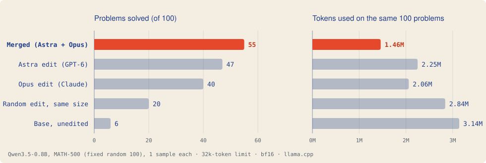
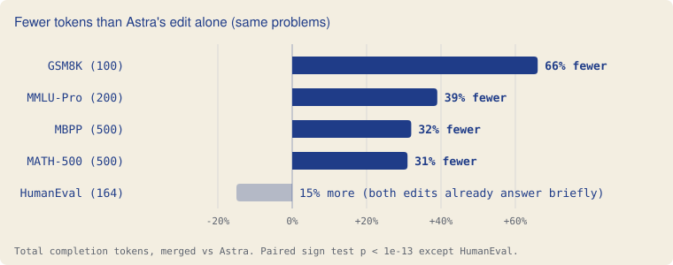

Earlier this week, MIT researchers showed that GPT-6 Astra could fix a small language model by editing its weights directly: no training, no gradients, a rank-1 change to 0.016% of the parameters. We reran it on a single consumer GPU. The edit replicates. We then gave the same task to Claude Opus 5.5, which found a different fix in a nearly orthogonal direction. The two fixes compose: applied together, they beat either alone and reach their answers with about a third fewer tokens.
Fine-tuning changes a model by showing it examples and following gradients. Takehi et al. asked whether a capable language model could skip all that, and simply read another network's weights, work out what is wrong, and write the fix by hand. They call this weight-space programming.
Their most practical result targets Qwen3.5-0.8B, a small reasoning model that often never finishes its answers. With thinking enabled it loops, restating the same doubts until it hits its token limit. Given a Python session over the weights and no gradients, GPT-6 Astra found a single direction that drives the looping and subtracted it from two matrices. MATH-500 accuracy rose from 7.9% to 48.1%.
A claim this surprising deserves an independent check, and it raises obvious next questions. We asked three:
First, the edit itself. Comparing every tensor bit for bit, only 2 of 488 differ: mlp.down_proj in layers 15 and 19, 64 columns each. Each change is rank 1, with the top singular value over 1,500 times the second. The paper describes it accurately. One small nuance: the two layers' directions agree at cosine 0.85, so "one direction" is a slight simplification.
Then the score. The edited model solves 234 of 500 (46.8%), against the paper's 48.1% (averaged over four samples). The base model solves 6 of the first 100, against the paper's 7.9%, and 95 of its 100 answers run to the token limit (paper: 93%). The result replicates.
Our first attempt failed: the edited model scored only 28%. The cause was a single default. vLLM, which the authors used, applies the presence penalty across the whole generated text. llama.cpp, by default, applies it only to the last 64 tokens. A model that loops over thousands of tokens never sees its own repetition through a 64-token window. Once the window covers the whole output, Astra's edit scores 47% on the same problems. If you replicate this on another engine, check this setting first.
Opus read the base model's failed reasoning and reached a different diagnosis. The model often gets the answer early. Then it starts doubting the problem itself: "maybe there's a typo", "perhaps the question means…", "alternatively…". The looping comes after that doubt. So instead of targeting the repetition, Opus targeted the doubt.
It collected layer-18 activations just before doubting lines and just before ordinary lines, and took the difference as a direction u. It then removed that direction from every matrix that writes into the residual stream in layers 12–23 (attention outputs and MLP down-projections, 24 matrices):
W ← W − u (uᵀW)
This is the same kind of operation as Astra's (a directional ablation), applied to a different direction. The two directions are nearly unrelated: their cosine is 0.095 and 0.119 for Astra's two layers. On its own, Opus's edit solves 40 of the first 100 problems, against base's 6 (p = 10⁻⁹). Astra's solves 47; the difference between the two single edits is not significant (p = 0.21). Two AIs, two different working fixes.
If the two edits remove different parts of one breakdown (doubt, then looping), applying both should help more than either. We built a merged model: Opus's edit first, then Astra's exact weight difference added on top. The rule reproduces our merged checkpoint bit for bit.

They do. On all 500 MATH-500 problems:
| Merged | Astra alone | |
|---|---|---|
| Correct | 261 (52.2%) | 234 (46.8%) |
| Solved by only this model | 70 | 43 |
| Answers cut off at 32k tokens | 151 | 190 |
| Total tokens | 7.93M | 11.50M |
Merged solves 70 problems that Astra's edit misses, and loses 43 (exact McNemar test, p = 0.014). Against Opus's edit alone, on the first 100, it gains 19 and loses 4 (p = 0.003). It keeps most of what each single edit solves and adds more.
The bigger surprise is how much less the merged model writes. It uses fewer tokens than Astra's edit on 328 problems and more on 69 (sign test, p ≈ 10⁻⁴¹). On problems both solve, its median answer is about a third as long. Removing doubt shortens reasoning.
A fair worry: maybe nudging the weights almost anywhere would knock the model out of its loops. To test this, we built a control with the same structure and size as the merged edit, but random directions:
Per matrix, its change is as large as merged's or larger.
| Model, first 100 problems | Correct | Cut off at 32k |
|---|---|---|
| Merged | 55 | 27 |
| Astra edit | 47 | 40 |
| Opus edit | 40 | 58 |
| Random edit, same size and structure | 20 | 80 |
| Base | 6 | 95 |
The random edit does help, which we did not expect: 20 against base's 6 (p = 0.003). Looking at the problems it solves, base had run to the token limit on each, while merged solved them in a few thousand tokens. Base seems to sit on a knife-edge. It knows many answers but cannot stop, and any perturbation of this size shakes it out of some loops.
The AI-found directions do far more. Merged solves 37 problems the random edit misses, against 2 the other way (p = 3 × 10⁻⁹). In points over base, that is +49 against +14. Shaking the model helps a little; knowing where to push helps much more.
Doubt is sometimes useful. An edit that suppresses it could hurt tasks where reconsidering is the right move. We ran the merged and Astra models on four more benchmarks. Code is executed in a Docker sandbox with no network.
| Benchmark | Merged | Astra | p |
|---|---|---|---|
| MMLU-Pro (200 questions) | 90 (45.0%) | 78 (39.0%) | 0.07 |
| GSM8K (100) | 68 | 71 | 0.63 |
| HumanEval (164) | 57 (34.8%) | 51 (31.1%) | 0.34 |
| MBPP (500) | 97 (19.4%) | 92 (18.4%) | 0.64 |
Merging is never significantly worse, and leans better on knowledge questions. On HumanEval, base scores 47 (28.7%) while using 3.6 times merged's tokens. The token savings are consistent:

The token limit may flatter the merge. A model cut off at 32,768 tokens might have reached the right answer with more room. We measured how repetitive the last 20,000 characters of each cut-off answer were, on the first 100 problems:
| Model | Cut off | Stuck in a loop | Still writing new text |
|---|---|---|---|
| Opus edit | 58 | 57 | 1 |
| Merged | 27 | 16 | 6 |
| Astra edit | 40 | 8 | 29 |
Opus's cut-off answers are almost all loops; more room would not help them. Astra's are mostly still making progress, so a higher limit could narrow the gap to merged. We will continue every cut-off answer to 64k tokens and report both. The efficiency result holds either way.
One run of each. One sample per problem, one random-control seed, and a single Opus attempt. Astra's own three runs found three different edits, and effects found on a first attempt often shrink when repeated. More Opus runs are next.
Base mostly fails to finish. Under these settings, base also runs out of tokens on most MMLU-Pro questions, so gains over base partly mean "finishing", not "knowing more". Base runs on MMLU-Pro, GSM8K and MBPP were still in progress at the time of writing.
One small model. A larger model that loops less may gain less from either edit.
A caution belongs here too. The projection that removes doubt or looping could just as easily remove a safety behaviour. Agents that can write such edits make oversight of weight changes more important, not less.
Everything is at github.com/ajaygrover/weight-space-programming-stacking:
The whole study runs on one 16 GB consumer GPU.
python scripts/apply_edits.py --edit merged --full --out qwen3.5-0.8b-mergedThanks to Takehi, Teoh, Zhang and Khattab for publishing their edited model, logs and code; an exact replication would not have been possible otherwise.
This work studies AI agents editing weights, and AI assisted throughout. Claude Opus 5.5, run as a separate agent, wrote the second edit as the experimental subject. Claude built and ran the evaluation pipeline and drafted text under my direction. I directed the research and am responsible for all claims.
Please cite this post as: Grover, A. (2026). Independently Discovered Weight Edits Compose: A Replication and Extension of Weight-Space Programming.
@misc{grover2026compose,
title = {Independently Discovered Weight Edits Compose: A Replication
and Extension of Weight-Space Programming},
author = {Grover, Ajay},
year = {2026},
url = {https://ajaygrover.github.io/weight-space-programming-stacking/}
}